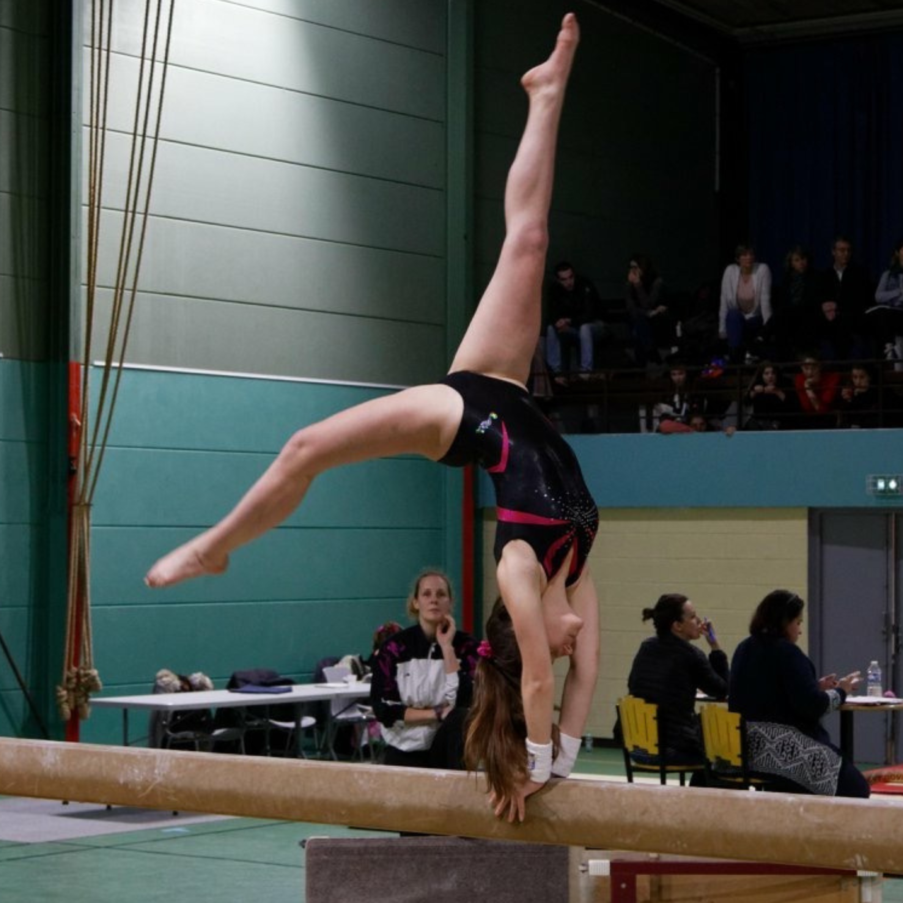

Athlétisme
Pratique depuis septembre 2022
Entrainement athlétisme

Gymnastique agrès
Pratique pendant 10 ans
En compétition, mouvement à la poutre

Randonnée
Vacances à l'aventure
Week-end randonnée en Corse